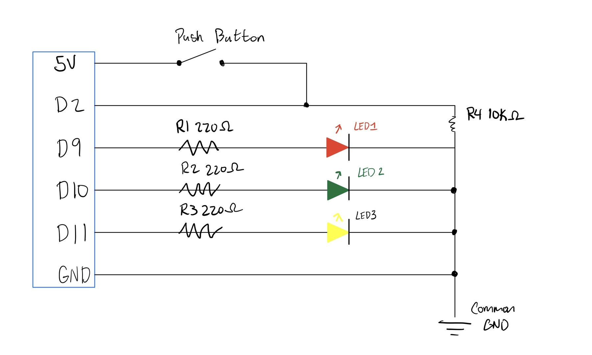
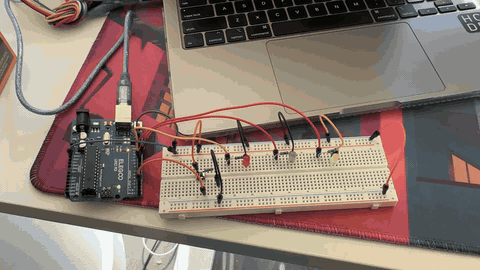
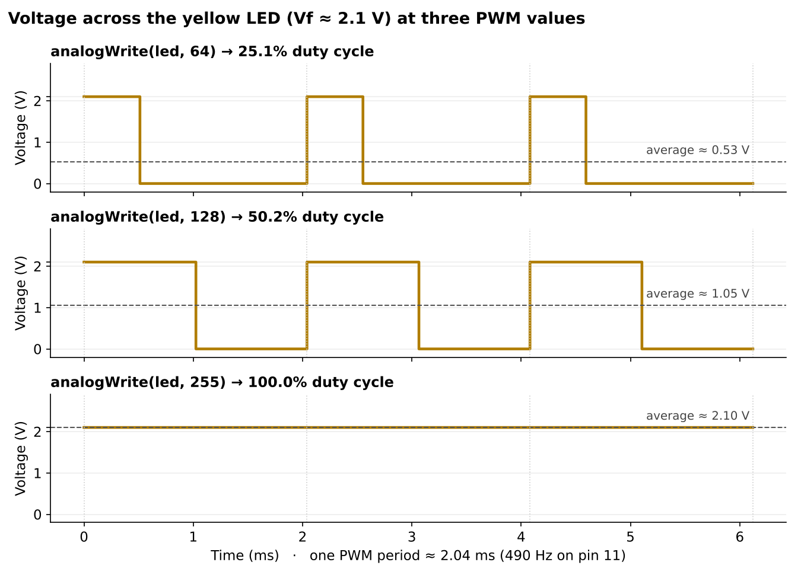

HCDE 439 Physical Computing · a light-up toy prototype
For our toy company's new light-up toy, I prototyped a Firefly Jar, a nightlight toy for kids. The jar stays dark until a kid presses and holds the button on the lid. Then the fireflies wake up: the red and green fireflies glow steadily, and the yellow firefly pulses, slowly fading from off to full brightness and back, like a firefly blinking in a jar. When the button is let go, the jar goes dark again after the yellow firefly finishes its last pulse.

digitalWrite(), and it can also dim the yellow LED with analogWrite(). Current flows out of each pin, through a 220 Ω current-limiting resistor, through the LED from anode to cathode, and back to GND. The 220 Ω value keeps each LED at about 13 mA, safely under the 20 mA limit (calculation below). The push button connects 5 V to pin D2 when pressed, and the 10 kΩ pull-down resistor R4 connects D2 to GND. It holds the pin at 0 V (LOW) when the button is up and limits the current to 0.5 mA when the button is pressed (explained below).Using Ohm's law, the resistor has to drop whatever voltage the LED doesn't use:
R = (Vsupply − Vf) / I
The Arduino's pins output 5 V. Typical forward voltages for standard 5 mm LEDs are about 2.0 V (red), 2.1 V (yellow) and 2.2 V (green). I used 20 mA as the target, because that is the maximum continuous current for a standard 5 mm LED and the recommended maximum for one Arduino pin. The red LED has the lowest forward voltage, so it needs the largest resistor and sets the minimum for all three:
Rmin = (5 V − 2.0 V) / 0.020 A = 150 Ω
Any resistor of 150 Ω or more is safe. I used 220 Ω, the next standard value in my kit, which gives a safety margin for parts that vary from their typical values and is still plenty bright for a nightlight toy. The actual current with 220 Ω:
| LED | Vf | I = (5 − Vf) / 220 Ω |
|---|---|---|
| Red (D9) | 2.0 V | 3.0 / 220 = 13.6 mA |
| Green (D10) | 2.2 V | 2.8 / 220 = 12.7 mA |
| Yellow (D11) | 2.1 V | 2.9 / 220 = 13.2 mA |
The button connects 5 V to pin D2. A resistor from D2 to GND does two jobs:
I picked 10 kΩ because it's the standard pull-down value: big enough that pressing the button wastes almost no current, but small enough to pull the pin firmly to 0 V against noise. A much larger value (say, 1 MΩ) would let noise creep back in, and a much smaller one (say, 100 Ω) would waste 50 mA every time the button is pressed.
Each time through loop(), the sketch checks the button with digitalRead():
digitalWrite() turns the red and green LEDs fully on. Then two for loops count the yellow LED's brightness from 0 up to 255 and back down to 0, setting it with analogWrite() at each step. 256 steps × 4 ms is about 1 s up and 1 s down. While the button is held, loop() keeps repeating, so the yellow LED keeps pulsing.digitalWrite() turns the red and green LEDs off, and the yellow LED stays off because its last fade ended at 0.The button is only checked between pulses, so after it's released the jar finishes the current fade (up to about 2 s) before going dark.
The sketch is also in my repo at a2/a2.ino.
// Pin for the red LED
const int RED = 9;
// Pin for the green LED
const int GREEN = 10;
// Pin for the yellow LED (this one fades, so it must be a PWM pin)
const int YELLOW = 11;
// Pin the button is connected to
const int BUTTON = 2;
// setup() runs once when the Arduino starts
void setup() {
// Set the red LED pin as an output
pinMode(RED, OUTPUT);
// Set the green LED pin as an output
pinMode(GREEN, OUTPUT);
// Set the yellow LED pin as an output
pinMode(YELLOW, OUTPUT);
// Set the button pin as an input
pinMode(BUTTON, INPUT);
}
// loop() runs over and over forever
void loop() {
// Check if the button is pressed (HIGH) or not (LOW)
if (digitalRead(BUTTON) == HIGH) {
// Turn the red LED on
digitalWrite(RED, HIGH);
// Turn the green LED on
digitalWrite(GREEN, HIGH);
// Fade the yellow LED up: brightness goes from 0 to 255
for (int brightness = 0; brightness <= 255; brightness++) {
// Set the yellow LED to this brightness
analogWrite(YELLOW, brightness);
// Wait 4 ms so the fade is slow enough to see
delay(4);
}
// Fade the yellow LED back down: brightness goes from 255 to 0
for (int brightness = 255; brightness >= 0; brightness--) {
// Set the yellow LED to this brightness
analogWrite(YELLOW, brightness);
// Wait 4 ms so the fade is slow enough to see
delay(4);
}
// If the button is not pressed
} else {
// Turn the red LED off
digitalWrite(RED, LOW);
// Turn the green LED off
digitalWrite(GREEN, LOW);
}
}

analogWrite() doesn't actually output an in-between voltage. It uses pulse-width modulation (PWM): the pin switches rapidly between 0 V and 5 V, and the value (0–255) sets what fraction of each cycle it spends HIGH. On the Uno, pin 11 runs PWM at about 490 Hz, so each cycle is about 2.04 ms. While the pin is HIGH, the voltage across the LED is its forward voltage (about 2.1 V for my yellow LED; the other ~2.9 V drops across the 220 Ω resistor), and while it's LOW the LED sees 0 V. At 64 the LED is on 64/255 = 25% of each cycle, at 128 it's on 50%, and at 255 it's on all the time, a flat line. The pulses are far faster than my flicker fusion threshold (around 50–60 Hz, from A1), so my eyes average them and see a dim, medium or full-brightness glow. The dashed lines show that average.All three LEDs are fully on at once when the button is held and the yellow LED reaches the top of its fade (brightness 255). Adding up the currents from my resistor calculation:
13.6 mA (red) + 12.7 mA (green) + 13.2 mA (yellow) = 39.5 mA
The button must be held down for all three to be on, so the 0.5 mA through the pull-down resistor also flows, for a total of about 40 mA.
This is well below the Arduino's limits. Each pin carries only about 13 mA, under the 20 mA recommended limit (and the 40 mA absolute maximum) per pin, and the whole circuit's ~40 mA is far below the ATmega328P's 200 mA total limit for the chip.
Battery life: battery life (hours) = capacity (mAh) / current (mA).
I set my multimeter to DC volts, held the button down so the red and green LEDs stayed steadily on, and put the red probe on each LED's long leg (anode) and the black probe on its short leg (cathode). I didn't measure the yellow LED, because it's always fading and PWM makes the meter's reading jump around.
| LED | Theoretical Vf | Measured V | Difference |
|---|---|---|---|
| Red (D9) | 2.0 V | 1.91 V | −0.09 V (about 4.5% lower) |
| Green (D10) | 2.2 V | 2.64 V | +0.44 V (20% higher) |
Red came out very close to the theoretical value, just 0.09 V lower. A slightly low reading is expected: the “typical” forward voltage is usually quoted at 20 mA, but my LED runs at only about 14 mA, and an LED's forward voltage drops a little when less current flows through it. Real LEDs also vary a bit from part to part.
Green was noticeably higher than the 2.2 V I assumed. That's because “green” LEDs are made from different materials. Older yellow-green LEDs have a forward voltage around 2.0–2.2 V, while brighter “true green” LEDs, like the one in my kit seems to be, need more voltage, often 2.5 V or more. So 2.2 V was the wrong theoretical value for my particular LED, and checking the kit's datasheet would have given a better estimate.
The measurements also let me recalculate the real currents. The resistor drops what the LED doesn't, so red gets (5 − 1.91) / 220 = 14.0 mA and green gets (5 − 2.64) / 220 = 10.7 mA. Both are still safely under 20 mA, so my 220 Ω resistors were a good choice. With these values, the total in Question 2 would be about 14.0 + 10.7 + 13.2 ≈ 38 mA (plus 0.5 mA for the button), slightly less than my estimate.
Yes. I used Claude to help draft the Arduino sketch and its line-by-line comments, to generate the schematic and the PWM voltage chart, to check my resistor and battery-life calculations, and to lay out this page in HTML. I built and tested the circuit myself, took the photos and video, and measured the LED voltage myself.